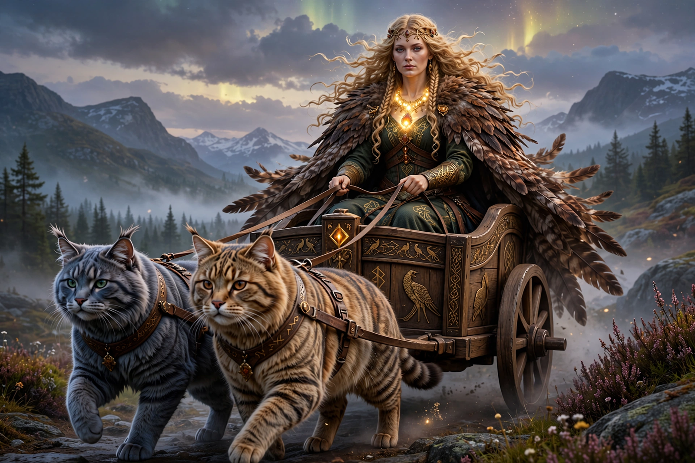

From Wikipedia, the free encyclopedia
| Freyja | |
|---|---|
| Affiliation | Vanir; goddess of love, beauty, fertility, war and seiðr |
| Family | Daughter of Njord; twin sister of Freyr; wife of Óðr |
| Hall | Fólkvangr; hall Sessrúmnir |
| Attributes | Necklace Brísingamen; falcon-feather cloak; chariot drawn by two cats; boar Hildisvíni |
| Old Norse | Freyja — 'Lady' |

Freya (Old Norse Freyja, "Lady") is a goddess of Norse mythology associated with love, beauty, fertility, gold, war and death, and with the practice of seiðr, a form of magic she is said to have taught to Odin. She is a member of the Vanir, daughter of the sea god Njord and twin sister of the fertility god Freyr, and came to live among the Æsir after the war between the two divine families. She is among the most prominent goddesses in the surviving sources, the Poetic Edda and Prose Edda.
Freya owns the precious necklace Brísingamen, a cloak of falcon feathers that allows its wearer to fly, and a chariot drawn by two great cats. She rides the boar Hildisvíni ("battle swine") and keeps the fallen in her realm Fólkvangr: by the account in Grímnismál, she chooses half of those slain in battle to dwell in her hall Sessrúmnir, while Odin receives the other half in Valhalla — a martial role that sits alongside her associations with love and fertility.
In the poem Þrymskviða, the giant Thrym steals Thor's hammer and demands Freya as his bride as ransom; she refuses in fury, and Thor goes in her place disguised as the bride. In Lokasenna, Loki taunts her at the gods' feast. Her husband Óðr is frequently absent on long journeys, and she weeps tears of red gold for him, searching for him under assumed names. Giants repeatedly seek to win her as a prize — as payment for building the walls of Asgard, and in the myth of the mead of poetry's aftermath — and the gods repeatedly refuse.
Place names across Scandinavia preserve her name, and the Old Norse sources treat her as a goddess still actively invoked in the late pagan period. The weekday Friday in English and several Germanic languages is generally understood as "Freya's day" (or that of the related goddess Frigg, with whom she is sometimes conflated in later tradition — scholars debate how distinct the two were originally). She remains a popular figure in modern Heathenry and in popular culture.